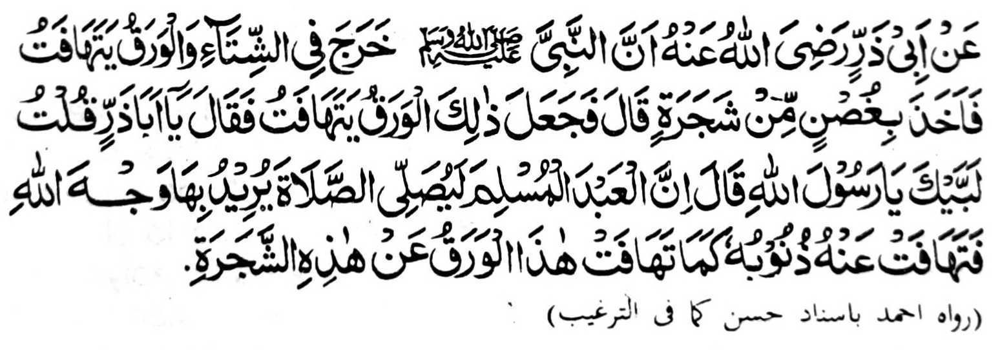

So Abu Dharr na piyanothol iyan a so Nabi (Sallallaho ‘Alaihi wa Sallam) na miyaka isa na lominiyo ko walay niyan a kapapantagan a gi-i manenggao na so manga ra-ona kayo na pephanga-tatatak na kiyapetan niyan so sapak o kayo na miyanga-tatatak so raon niyan, na pitharo iyan, “Hay, Abu Zar!” Pitharo aken, “Ino ka, Ya Rasulollah?” Pitharo iyan, “Amay ka so isa a oripen a Muslim na zambayang a soa-soat iyan ko Allah, na so manga dosa niyan na pekhatatak rekaniyan sa lagid angka-iya manga ra-on a pekhatatak pho-on sangka-iya kayo.”
Igira mosim a panenggao, na aya kalalayaman na, so manga ra-on a kayo na pekhatatak sa tanto a madakel sa aden a manga kayo a daden a khalamba-on a ra-on. Lagidoto so rarad o Sambayang a ininggolalan sa Ikhlas go piphiya-piya-an. So langon o dosa o tao a gi-i zambayang na langon pekhaponas.
Aya tanto a thanodan si-i na so manga Olama na aya tindeg iran na so bo so Sagha-ir (manga i-ito a dosa) i pekharila-an ko gi-i kipamayandegen ko Sambayang go so manga ped a simba. So Kaba-ir (manga ala a dosa) na di perila-an o da a kathaobat. Giyoto-i sabap sa liyo pen ko gi-i kazambayang, na siyapen a ped so Taubah (kathaobat) go so Istighfar (kapangeni sa rila). So Allah, na khapakay a, sabap ko kala Iyan i gagao, na apiya so Kaba-ir na irila Iyan sabap ko Sambayang.